01
江苏人社求职招聘智能 APP
2026.06—至今
为求职者、企业与服务机构搭建可信的求职招聘入口，让政策、简历、岗位和面试能力在一个任务链路中协同。
- 角色
- 产品负责人
- 负责
- 产品架构 / 多角色流程 / 移动端交互 / 跨系统衔接
- 交付
- 10 类智能体场景、任务中心与求职招聘主流程
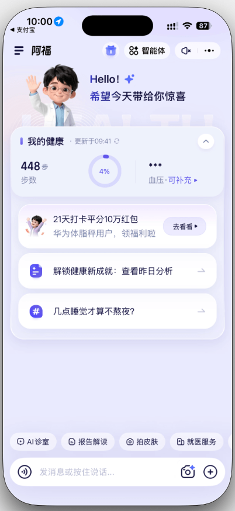
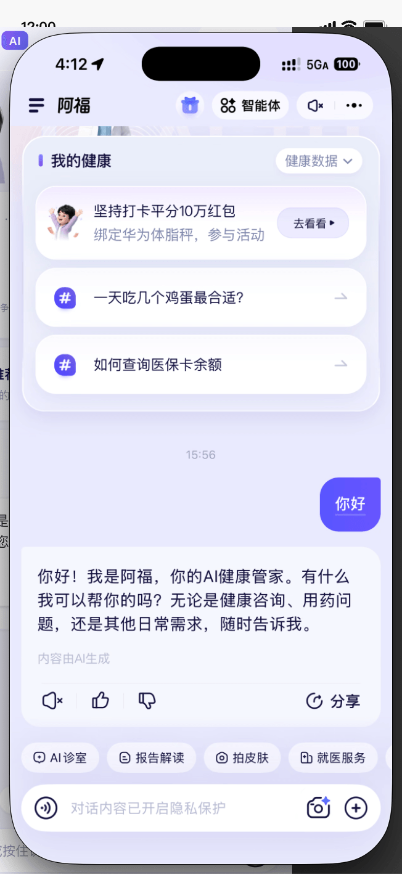
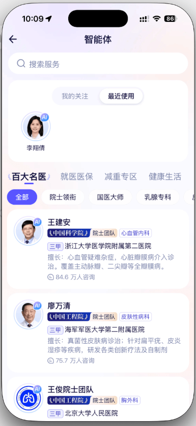
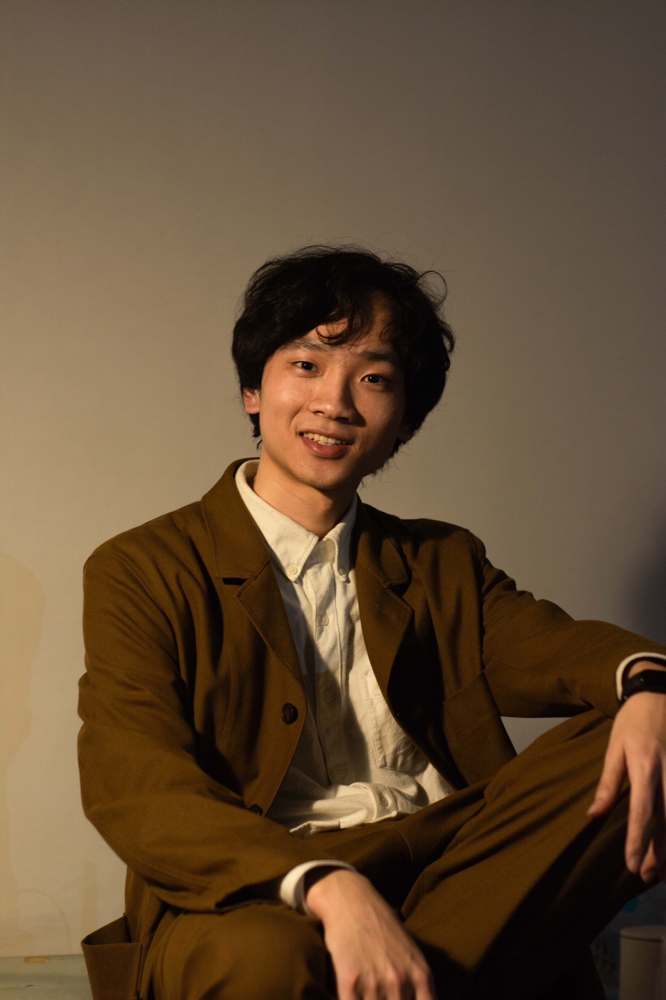
WHAT I DO
现任云脑智联产品负责人，负责 AI 智能硬件、智能客服、招聘与政务产品。从需求研究、产品架构和交互原型，到研发协同、验收与客户交付，我持续跟进完整链路。
SELECTED WORK · 2025—2026
2026.06—至今
为求职者、企业与服务机构搭建可信的求职招聘入口，让政策、简历、岗位和面试能力在一个任务链路中协同。



2026.03—至今
把线下共享充电设备、云端运维和客服服务串成一个闭环，让柜机能感知现场，让 AI 先解决高频问题，让人工接住复杂情况。
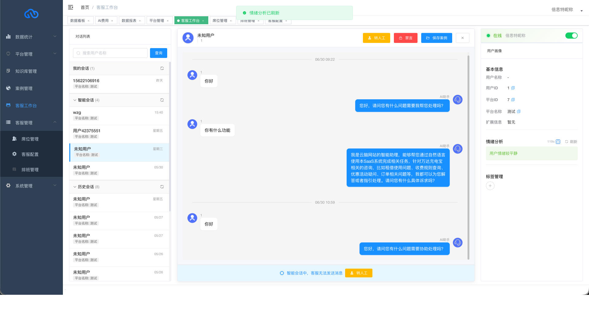
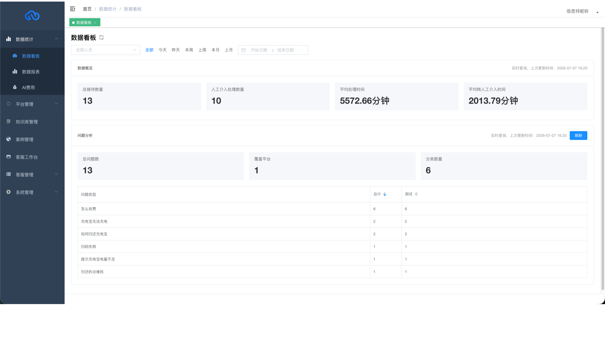
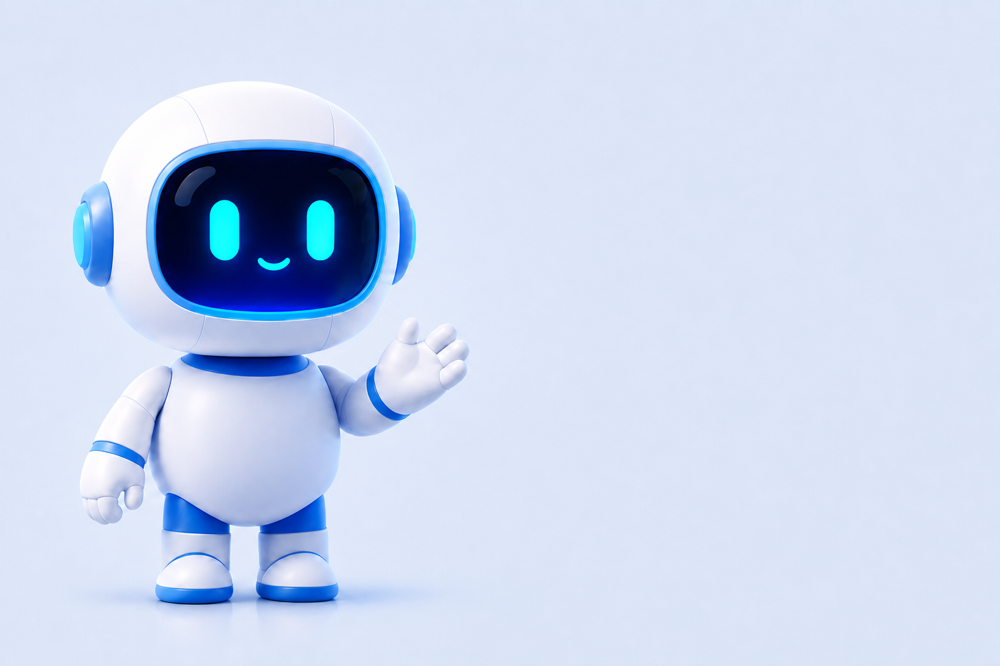
2025.12—2026.03
面向制造业和蓝领批量招聘，将身份核验、数字人问答、基础能力测试、报告评估与 HR 复核做成可重复部署的标准化产品。
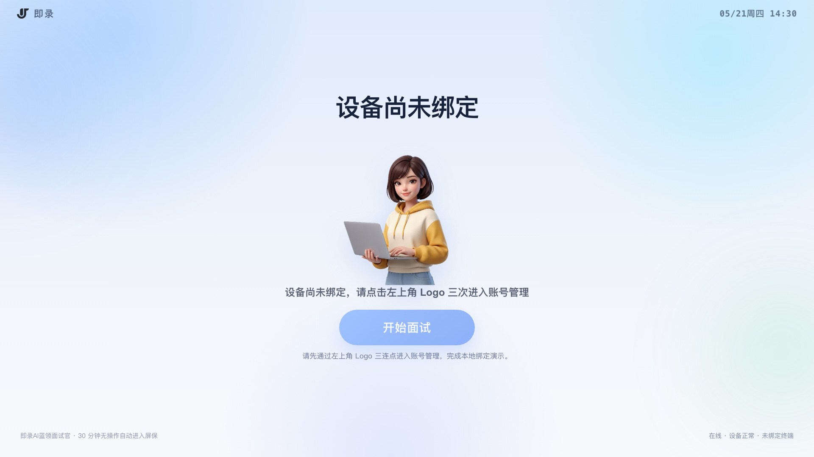
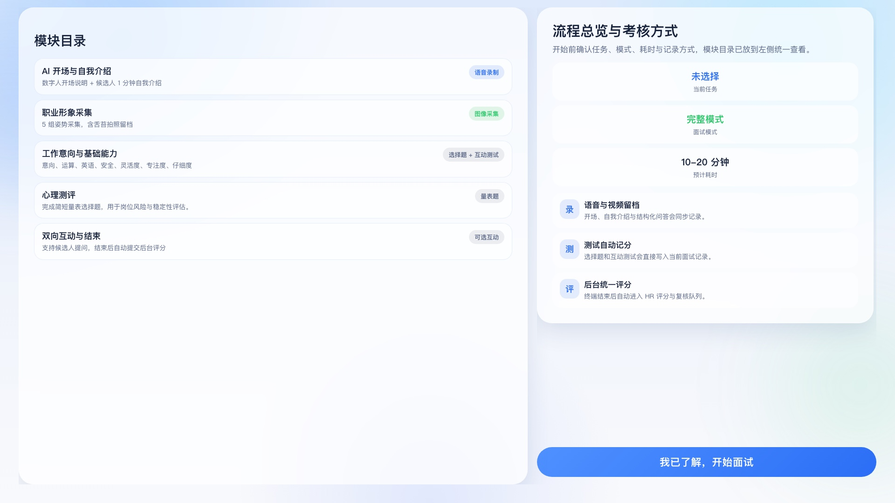
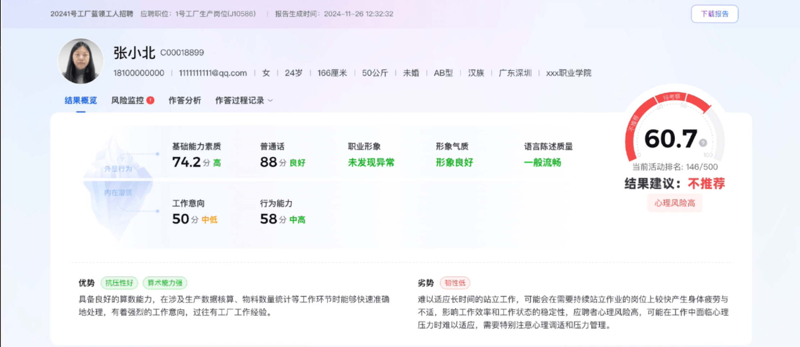
2025.07—2025.11
参与公司 AI Agent 平台前期建设，明确行业解决方案定位，规划应用、工作流和智能体资产，为后续行业项目建立可复用的平台基础。
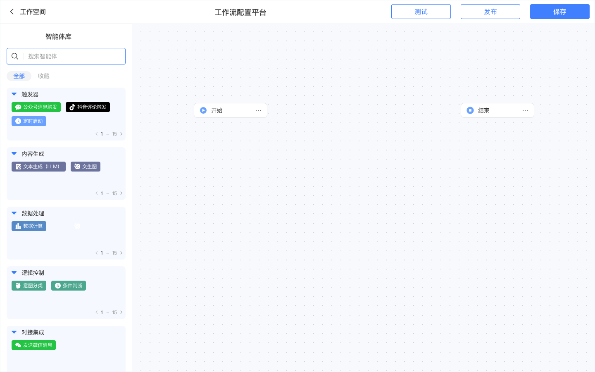
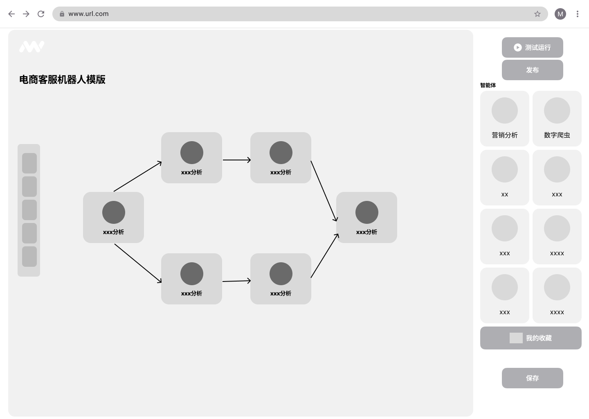
EARLIER PRACTICE · 2019—2022
SHENZHEN GENERAL INSTITUTE OF ARCHITECTURAL DESIGN
从建筑、结构与幕墙的真实协作问题出发，梳理角色、数据依赖和版本关系，规划统一数据模型与五类核心模块。协同周期由 8 天缩短至 5 天，并复用于多个大型项目。
建筑师 · 产品设计 / 参数化系统 / Python
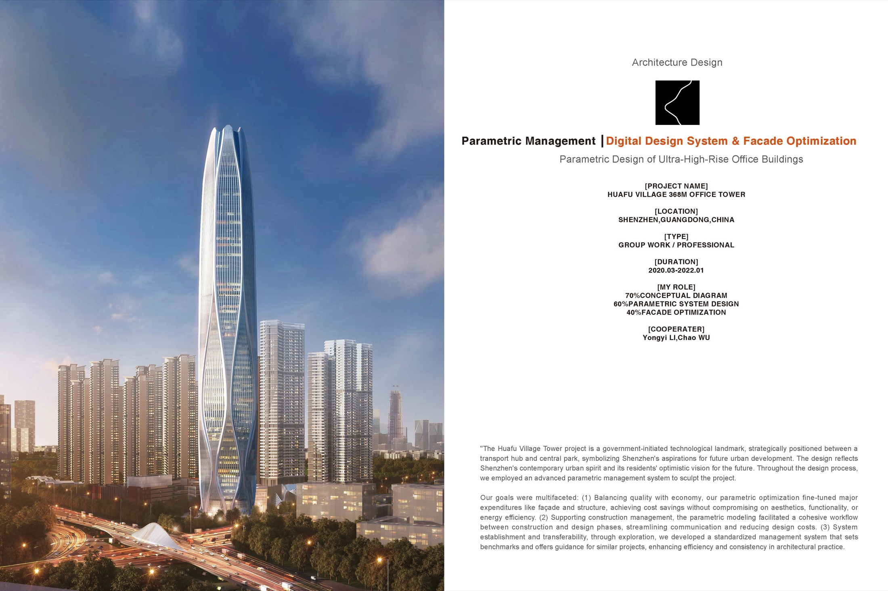
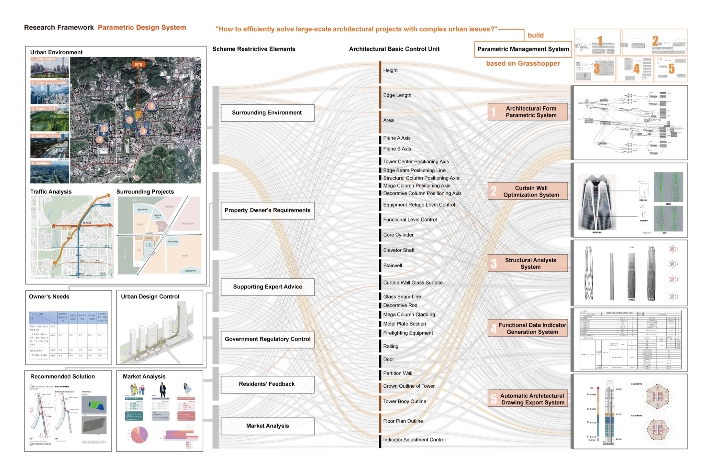
RESEARCH PRACTICE
R.01 · 2026.06—至今
独立构建 25 智能体可控社会仿真环境，量化信息传播中的遗忘、陈旧坚持和内容漂移；设计携带来源与版本信息的可信记忆机制。重复实验中，真值保持率由基线的 22% 提升至 57%。
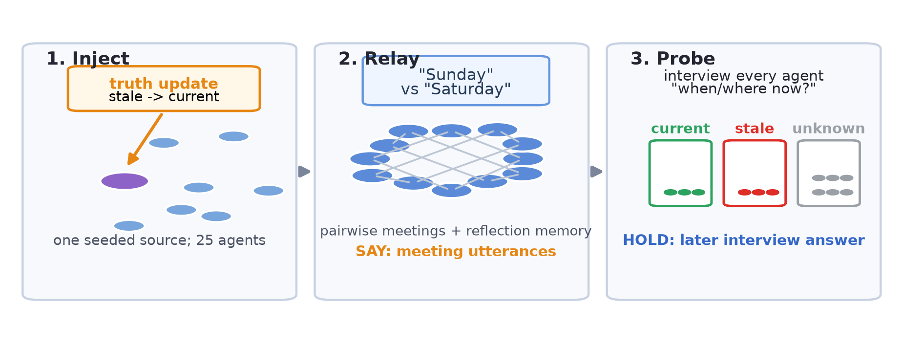
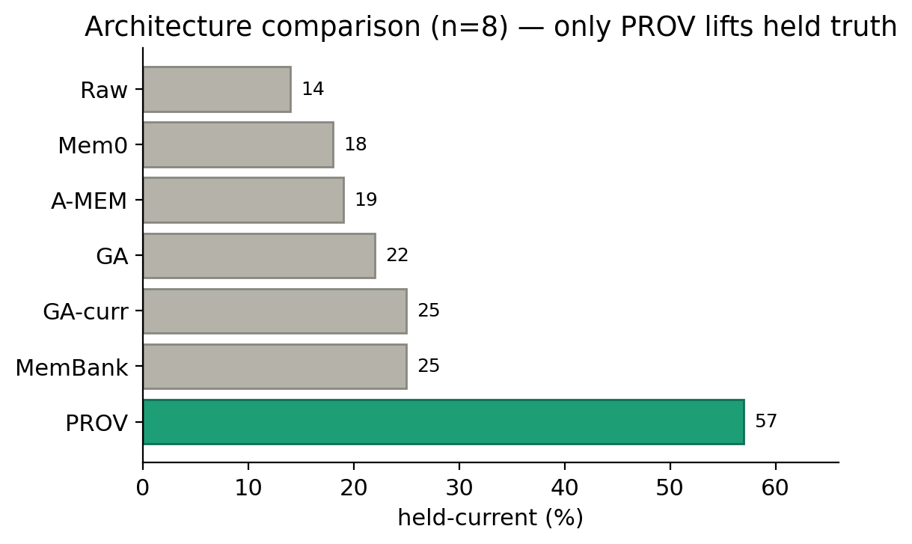
R.02 · HKU · 2024—2025
设计四种 GPT-4o 零样本工作流，完成 10 类与 25 类任务对比评测；第一作者成果发表于 CAAD FUTURES 2025。
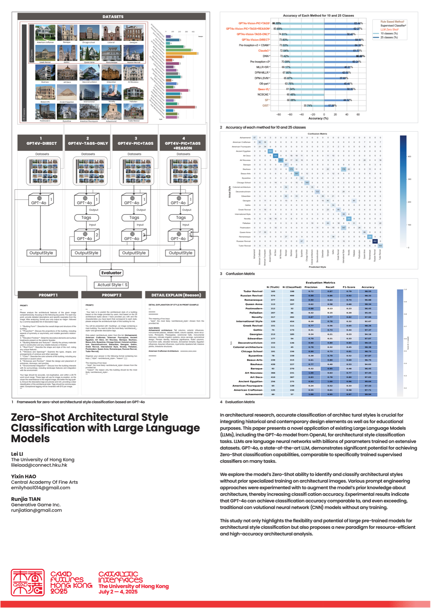
R.03 · HKU · 2024—2025
使用 Coze、Midjourney、Claude 与 Rhino 搭建从自然语言意图、视觉草稿到参数化模型的自动化流程，并以 Web MVP 验证生成与分析能力。
ABOUT
做设计师时，我习惯从真实场景出发，在复杂信息中识别关键问题，理解不同角色的诉求，并把抽象想法推进为可使用、可验证的方案。进入 AI 产品领域后，产品载体发生了变化，但这种工作方式延续下来：先理解人和业务，再定义流程、边界与反馈，最后和团队一起完成交付。
我更关注 AI 如何进入具体业务，而不仅是功能本身。无论是智能柜机、招聘面试还是政务服务，我希望产品既能发挥模型能力，也能处理异常、责任和现实约束，并最终在现场稳定运行。
工作之外，我持续进行多智能体可信记忆研究，也长期拍摄人物与城市。研究让我保持对技术机制的追问，摄影则提醒我关注具体的人，以及他们真正身处的环境。
Base深圳 / 可出差
Focus产品设计 / AI / 研究
Beyond摄影 / 人物 / 城市观察